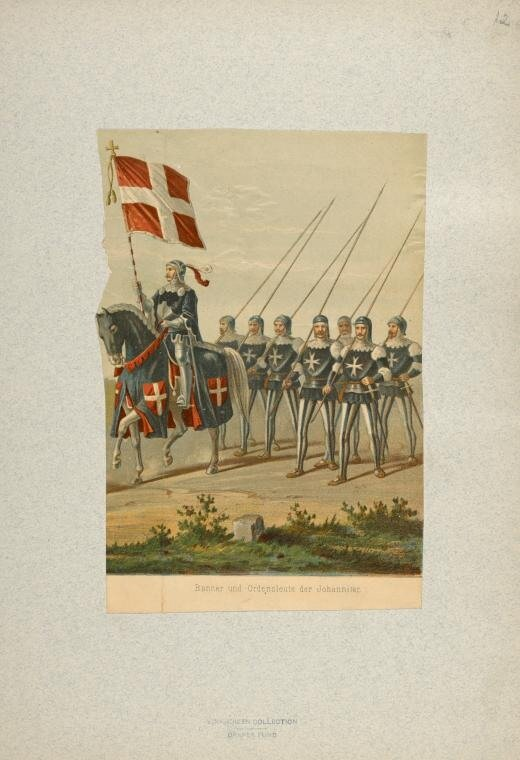
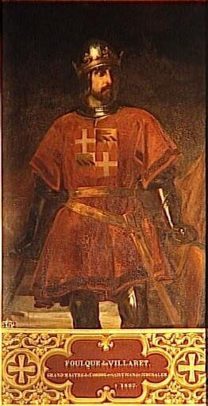

Совсем недавно мы обсудили первые десятилетия существования ордена госпитальеров и остановились на его пребывании на Кипре. Хотелось бы выделить особо два момента.
Во-первых, покинуло Святую Землю после катастрофы в Акре только СЕМЕРО рыцарей ордена. Сотни остальных, защищавших крепости на территории Сирии и Ливана, остались там навсегда. К 1302 году удалось нарастить силы ордена только до восьмидесяти человек. Таким образом, первая задача состояла в ускоренном увеличении численного состава ордена.
Во-вторых, требовалось разработать новую стратегию в сложившихся условиях. С потерей всех баз в Сирии и Палестине вести речь о продолжении борьбы с мусульманами на сухопутном фронте было глупо. Срочно требовалась новая доктрина, ядром которой должен был стать захват господства на море. Такая доктрина была без промедления принята. Уже в 1293 году была создана первая эскадра галер, которую направили на помощь Армении, единственному христианскому государству, оставшемуся на азиатском побережье Средиземного моря. Но сил явно не хватало. Не привели к большим успехам и несколько рейдов на галерах, которые предприняли тамплиеры в союзе с иоаннитами, пытаясь удержать крошечный остров Руад, который прикрывал крепость крестоносцев Тортозу (нынешний Тартус). В 1302 году Руад пал. Весь Левант оказался под властью Египта. В течение четырнадцатого века эта власть постепенно перешла к Османской Турции, образовавшейся в 1299 году. Обескровленные рыцарские ордена тамплиеров и госпитальеров не могли противостоять этому господству. На пути возрождения военной силы рыцарей встало и королевство Кипра, не без оснований опасавшееся за свой суверенитет в случае возрождения военного могущества орденов. Требовалось принятие немедленного решения о дальнейшей судьбе ордена.
Чтобы понять последующие события, перенесемся на короткое время в Париж. В 1285 году на французский престол взошел Филипп IV, прозванный Красивым. Насилие и жестокость, которыми славились его предшественники, осталось основными характеристиками и новой власти. Филиппу вечно не хватало денег на осуществление своих грандиозных планов. Первой жертвой стремления получить эти деньги оказался папа Бонифаций VIII. Филиппа соблазняло богатство церкви.
Советник и хранитель печати французского короля Гийом де Ногарэ, считавший, что духовенство обязано деньгами помогать своей стране, с небольшой свитой выехал в Италию, чтобы арестовать папу. Папа уехал в Ананьи, не зная, что жители этого города готовы изменить ему. Ногарэ и его спутники свободно вошли в город, проникли во дворец и здесь «вели себя с величайшей грубостью, едва ли даже не с насилием». И хотя через пару дней жители Ананьи передумали и освободили папу, это не помогло. Спустя несколько дней Бонифаций VIII умер, а через 10 месяцев умер и его преемник, Бонифаций IX. Так как эта смерть пришлась весьма кстати для французского короля, то пошла молва, что без отравления здесь не обошлось.
Новый папа француз Климент V, избранный в 1304 г., перенёс свою резиденцию в Авиньон, находившийся под контролем французского правительства. Началось так называемое «авиньонское сидение» или «вавилонский» плен пап. Данте Алигьери отметил это в своей «Божественной комедии»:
«Но я страшнее вижу злодеянье:
Христос в своем наместнике пленен,
И торжествуют лилии в Аланье.»
(«Чистилище», ХХ, 85-87.)
Покончив с папством, сделав его орудием в своих руках, Филипп принялся за следующего богатого клиента. На этот раз им оказался орден тамплиеров, слухи о несметных богатствах которого ходили в то время. Мы можем снова обратиться к Данте:
«Я вижу – это все не утолило
Новейшего Пилата; осмелев,
Он в храм вторгает хищные ветрила.»
(Там же, 91-93)
Пользуясь сомнительным доносом, Филипп развернул широкую кампанию против тамплиеров. История гонений на членов ордена и инспирированных судебных процессов и казней хорошо известна. В итоге Климент V издал буллу «Vox in excelso» от 22 мая 1312 года, которая ознаменовала роспуск ордена. Согласно другой булле «Ad providam» от 2 мая вся собственность ордена безвозмездно передавалась ордену госпитальеров, однако вскоре после этого Филипп IV изъял у них крупную сумму денег в качестве «судебной компенсации».
У членов ордена госпитальеров не оставалось сомнений, что следующими жертвами французского короля станут они. Но судьбе было суждено распорядиться иначе. Орудием этой судьбы стал Фульк де Вилларе (Foulques de Villaret), Адмирал флота госпитальеров, талантливый и неразборчивый в средствах для достижения поставленной цели политик.

Под руководством нового Магистра ставка ордена на укрепление морской мощи получила весомые гарантии. Успеху адмирала на избранном пути способствовала военно-политическая обстановка, сложившаяся в то время в Эгейском регионе.
Окруженная со всех сторон Византия пыталась удержать остатки своих владений. Венеция и Генуя сцепились в смертельной схватке за новые рынки после потери портов в Сирии. Испания устремилась в этот регион за легкой добычей. Профранцузский папа Климент V пытался сколотить коалицию западных стран против Византии. И Османская Турция стремилась использовать ситуацию, чтобы отхватить новые островные владения в Эгейском море.
У госпитальеров появилась возможность поймать жирную рыбу в этой мутной воде. Де Вилларе эту возможность не упустил. Его взор обратился на Родос, располагающий прекрасными гаванями для флота и плодороднейшей почвой.
Расположенный в Эгейском море у юго-западных берегов Малой Азии, в группе островов Додеканес остров Родос отделен от материка проливом шириной 18 километров. Длина острова составляет 78 км, а ширина 38 км. Первоначально остров Родос был населен карийцами. Позднее здесь появились финикийцы, а затем греки. В 44 г. н.э. Родос был завоеван римлянами. В средние века Родос входил в состав Византийской империи. В 672 году был захвачен арабами. Возвращен Византии императором Алексеем Комнином. Во время крестовых походов Родосом завладели генуэзцы.
О том, как госпитальерам удалось закрепиться на острове поговорим в следующий раз.